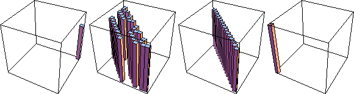
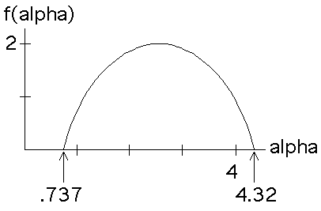

| Taking limits as the side length of the regions go to zero, the coarse Holder exponent
can be refined to the local Holder exponent (or roughness) at |
| dloc(x,y) = limn -> infinity Log(Prob(i1...in))/Log(2-n) |
| where Prob(i1...in) is the probability pr(i1)* ... *pr(in), if |
| The value for a square of finite length address is called the coarse Holder exponent.
So the local Holder exponent of a point |
| Now define |
| Ealpha = {(x, y): dloc(x, y) = alpha}, |
| the collection of all points of the fractal having local Holder exponent alpha. |
| As alpha takes on all values of the local Holder exponent, we decompose the fractal into these sets Ealpha. |
| Here are examples, Ealpha (alpha = column height) for the lowest value of alpha (on the left), two intermediate values, and the highest value. |
|  |
| Click
here for an animation scanning through all the values of
alpha, from lowest to highest, resolved to boxes have side length |
| Because each local Holder exponent alpha is the exponent for a power law, a multifractal is a process exhibiting scaling for a range of different power laws. |
| The multifractal structure is revealed by plotting
|
| (In general, a dimension more subtle than the box-counting dimension must be used. We ignore this complication here.) |
| This graph is called the f(alpha) curve. |
| Here is the f(alpha) curve for the example with
|
| At least in this example, sets Ealpha for the lowest and highest values of alpha
reduce to points in the limit, hence have dimension |
|  |
| This result is derived under more general conditions in a later section. |
Return to Multifractals.